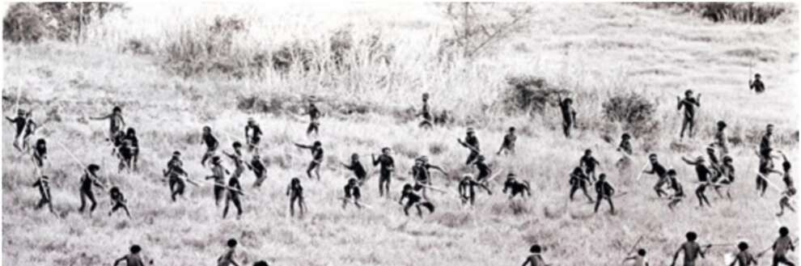
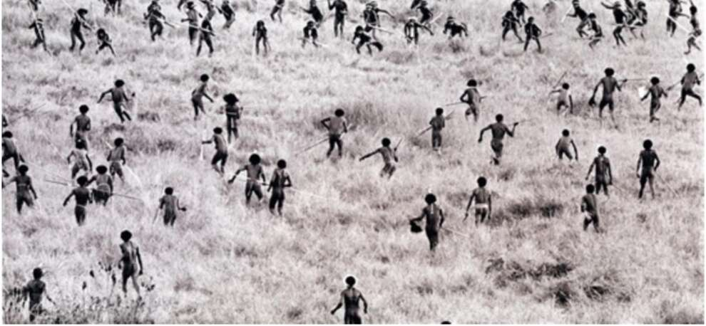

pe ie = Pe « | ee ‘a ze cet age waht 12. Tribal warfare in New Guinea between two farming communities (1960). Such scenes were probably widespread in the thousands of years following the Agricultural Revolution. Many anthropological and archaeological studies indicate that in simple agricultural societies with no political frameworks beyond village and tribe, human violence was responsible for about 15 per cent of deaths, including 25 per cent of male deaths. In contemporary New Guinea, violence accounts for 30 per cent of male deaths in one agricultural tribal society, the Dani, and 35 per cent in another, the Enga. In Ecuador, perhaps 50 per cent of adult Waoranis meet a violent death at the hands of another human!3 In time, human violence was brought under control through the development of larger social frameworks — cities, kingdoms and states. But it took thousands of years to build such huge and effective political structures. Village life certainly brought the first farmers some immediate benefits, such as better protection against wild animals, rain and cold. Yet for the average person, the disadvantages probably outweighed the advantages. This is hard for people in today’s prosperous societies to appreciate. Since we enjoy affluence and security, and since our affluence and security are built on foundations laid by the Agricultural

